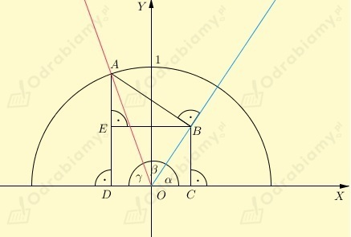
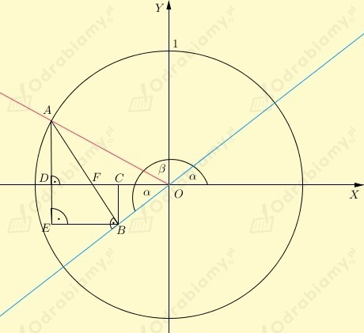

Na początek uzasadnijmy, że kąt EAB ma miarę 𝛼. (ćwiczenie z przykładu znajdującego się nad zadaniem nr 5)
Zauważmy, że prosta EB jest równoległa do osi OX, zatem kąt OBE ma miarę 𝛼 (kąty DOB i OBE są naprzemianległe).
Zatem
Suma miar kątów w trójkącie to 180º, więc
co kończy dowód.
Mamy do uzasadnienia, że
Korzystamy z informacji i rysunku znajdujących się nad zadaniem.
Wiemy, że
zatem
Zauważmy, że
Czyli
Wyznaczmy |OC| i |DC|.
Z rysunku odczytujemy, że
Podobnie
Zauważamy, że |EB|=|DC|, więc
Więc otrzymujemy
co kończy dowód.
a)
Założenie
Teza
Dowód
Przyjmijmy oznaczenia jak na rysunku poniżej

Zauważmy, że
Dostajemy
Zauważmy, że prosta OC jest równoległa do osi OX, zatem kąt OBE ma miarę 𝛼 (kąty BOC i OBE są naprzemianległe).
Zatem
Suma miar kątów w trójkącie to 180º, więc
Więc otrzymujemy
co kończy dowód.
b)
Założenie
Teza
Dowód
Przyjmijmy oznaczenia jak na rysunku poniżej

Niech
wówczas
Zauważmy, że
czyli
Więc otrzymujemy
co kończy dowód.
W zadaniu będziemy korzystać ze wzorów
Rozpiszmy lewą stronę powyższego wzoru.
co kończy dowód.
Rozpiszmy lewą stronę powyższego wzoru.
co kończy dowód.